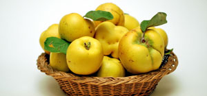

میوه به
به درخت كوچكي است كه پوست ساقه و تنه آن قهو ه اي بوده و در اكثر نقاط اروپا ، نواحي مديترانه ، آسيا و آفريقاي شمالي مي رويد .برگهاي آن پوشيده از كرك و صاف است . گلهاي آن درشت ، برنگ سفيد و يا صورتي و داراي پنج گلبرگ مي باشد .
به درخت كوچكي است كه پوست ساقه و تنه آن قهو ه اي بوده و در اكثر نقاط اروپا ، نواحي مديترانه ، آسيا و آفريقاي شمالي مي رويد .برگهاي آن پوشيده از كرك و صاف است . گلهاي آن درشت ، برنگ سفيد و يا صورتي و داراي پنج گلبرگ مي باشد .
به براي درمان بسياري از بيماريها ازجمله عفونتهاي رودهاي و ورم حاد روده، اسهال مخصوصا از نوع خوني، سوزش مجاري ادرار، تنگي نفس، سردردهاي مزمن و التهابهاي مختلف مفيد است.ميگويند با خوردن به، عرق بدن خوشبو ميشود.خانمهاي باردار براي جلوگيري از سقط جنين به مصرف ميكنند.
عقل را زیاد ، قلب ضعیف را نیرومند و معده را تمیز میکند بر نیروی دل می افزاید و ترسو را شجاع و فرزند را نیکو میکند و کسی که آن را بخورد خداوند تا چهل روز حکمت را به زبان او جاری میکند .